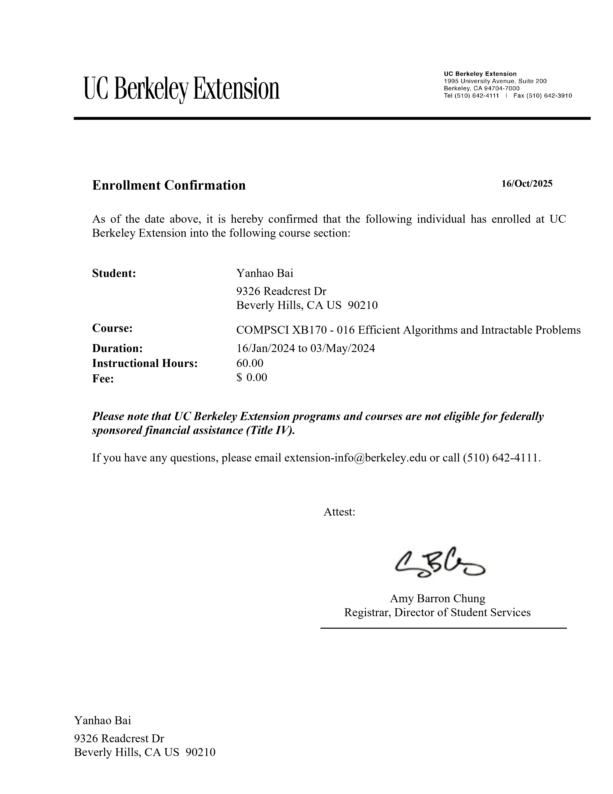
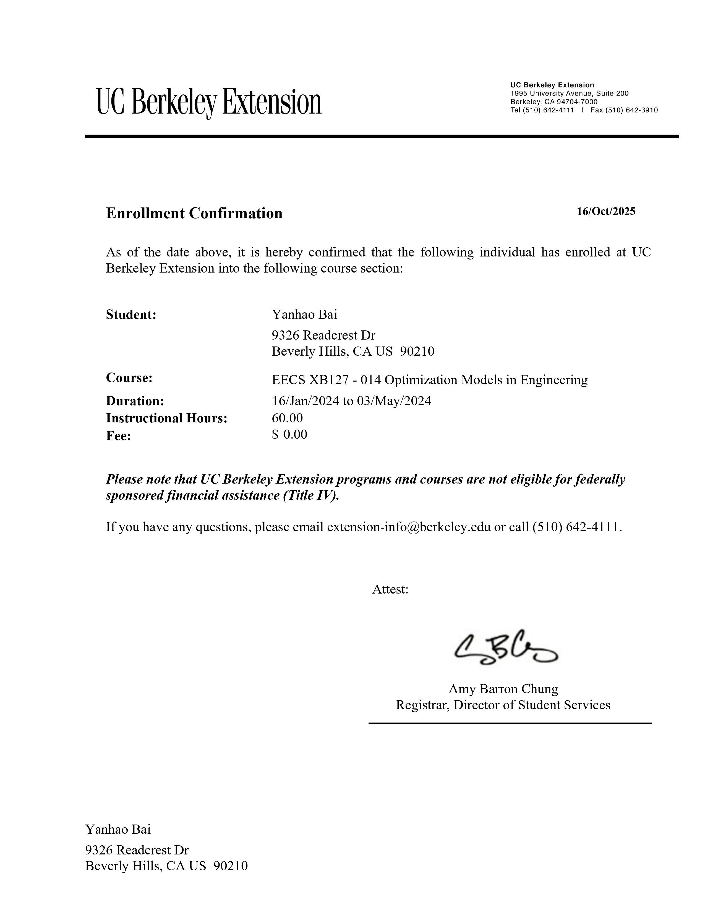
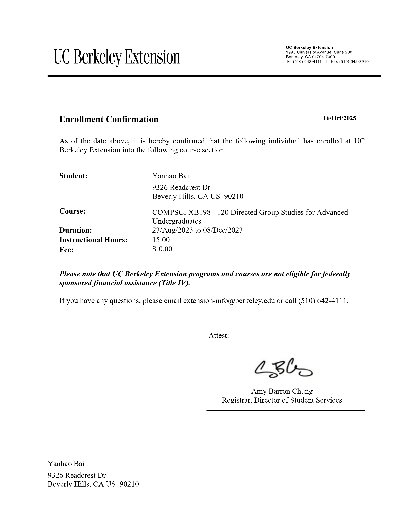
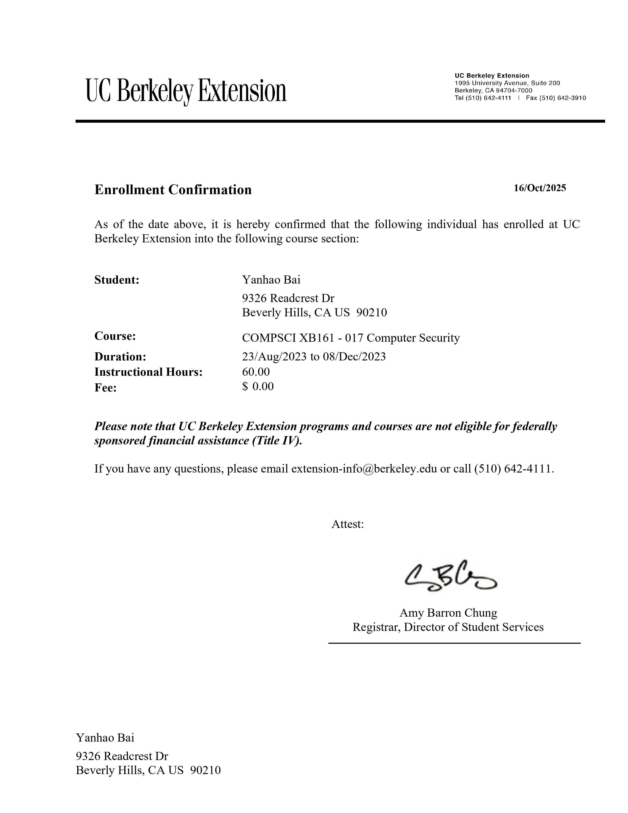
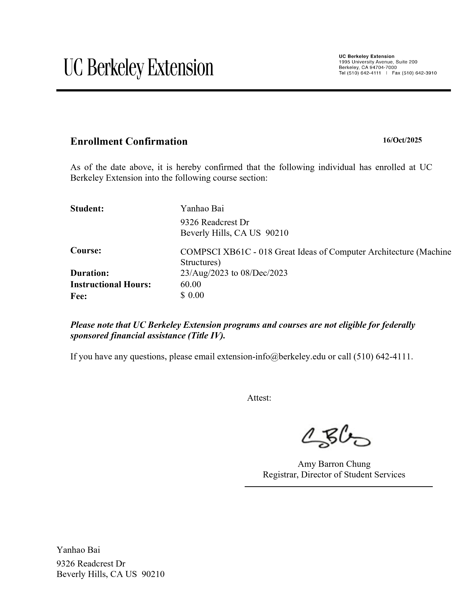

I am on the job market and actively seeking SDE summer intern opportunities starting in May 2026!
I've been a B.S. student in the School of Computer Science and Technology at Dalian University of Technology (DUT) in China 2020-2024. I was also a Bachelor's one-year exchange student at University of California, Berkeley 2023-2024, half-year exchange student at Technical University of Munich 2022-2023. I was a Software Development Backend Intern at ByteDance in 2024 fall, Software Development FullStack Intern at Microsoft Redmond in 2024 summer.
I'm interested in Autonomous Driving and Scalable Software Solutions and wish to explore any subfields of Computer Science for my future SDE work in the US; in order to better prepare myself for this, for my last year of bachelor's study at UC Berkeley, the coursework undertaken at Berkeley EECS Department includes:
COMPSCI 198 099, FullStack Web Development.
COMPSCI 198 075, Building Apps.
COMPSCI 198 088, System Admin.
COMPSCI 161, Computer Security.
COMPSCI 61C, Computer Architecture.
COMPSCI 127, Efficient Algorithms.
EECS 127, Optimization Models.





I'm also most-updated with 2025 AGI broad visions and ASI promising wills and wish to contribute to any subfields of it in the near future. In order to better prepare myself for this, upon wrapping up with my last year's software development intern projects, till now, the open talk includes:
Dr. Eric Schmidt in July about What Artificial Superintelligence Will Actually Look Like.
Andrej Karpathy in October about AGI :we’re summoning ghosts, not building animals.
Andrej Karpathy in June about Software is Changing Again.
Andrej Karpathy in Feburary about Deep Dive into LLMs like ChatGPT, How I Use LLMs.
Exchange opportunities:
TUMExchange: TUM Global & Alumni Office has the following partner universities: for Chinese mainland, 17 offerings for Project 985 universities, 3 offerings for sino-foreign cooperative universities; for Hong Kong sar, 6 offerings; for Taiwan sheng, 5 offerings. TUM offers exchanges during Winter and Spring semesters, please apply early.
UCBerkeley International Study Program: BISP offers exchanges gloablly during Fall and Spring semesters, please apply early.
Mitacs Globalink Research Internship in Canada: Mitacs offers research internships globally only during summer for junior college students, please adhere to the application criteria.
I am happy to collaborate and/or answer questions about my previous exchange studies at TUM, UC Berkeley. If you are interested in research collaboration in autonomous driving or have any inquiries about my experience in software engineering, please send me an email.
[Latest News] Currently I am applying for Columbia Engineering MSCS program, dedicating to scalable software solutions. /ivyAI
[2024/08/20] Start my Fall Internship at ByteDance in Beijing!
[2024/05/28] Start my Summer Internship at Microsoft in Redmond!
[2024/05/25] New chapter at ByteDance Feishu Team in Beijing as a Software Engineer Intern, as today I confirm my offer letter for 2024 fall!
[2024/03/22] New chapter at Microsoft Redmond in Seattle area as a Software Engineer Intern, as today I confirm my offer letter for 2024 summer!
[2023/12/07] Our Project Beam Prediction Based on Multi-Modal Fusion by utilizing deep learning approaches has seen more accuracy in prediction tasks! NOW we have submitted for review a journal paper heading to IEEE Transactions on Vehicular and Technology(VT-2024-03827). /finger-crossed
[2023/08/16] Today I start my 1-Year Exchange at University of California, Berkeley for my final bachelor year in cs major! Looking forward to building connections with talents on Berkeley campus and in the Bay Area. Go Bears!
[2023/07/17] Start a AI&ML Summer Bootcamp at LMH, a college in the University of Oxford. Looking forward to building connections with talents from 26 countries on Oxford campus!
[2023/06/12] Our Project UAV Based Machine Leaning Aided ISAC has been approved as a national patent! It is also ranked as a national-level innovation project! /thumb-up
[2022/10/01] Today I start my 1-Semester Exchange at Technische Universität München to explore more in relevance of world-class car factories and autonomous driving! Sehr Gut!
University of California Berkeley, Berkeley, USA (Aug. 2023 - May. 2024)
Exchange Student, Computer Science
Major Orientation: Fullstack Web Development, Building Apps, Computer Architecture
Overall GPA: 4.0/4.0
Technical University of Munich, Munich, Germany (Oct. 2022 - Mar. 2023)
Exchange Student, Computer Science
Major Orientation: AI for Autonomous Driving, Visual Data Analytics, Data Mining
Overall GPA: 3.0/1.0
Research project: "Search-based Motion Planning with Motion Primitives"
Dalian University of Technology, Dalian, China (Aug. 2020 - May. 2024)
Bachelor of Science in Computer Science
Major Orientation: Deep Learning for Multi-Modal Vehicular Networks
Overall GPA: 91.2/100 | 3.92/4.0
Thesis project: "Intelligent Beam Prediction Based on Vision-Radar Integration: A Multimodal Fusion Approach", 2024 Institute of Electrical and Electronics Engineers (IEEE) Transactions on Vehicular Technology, VT-2024-03827, editor assigned for review.
Designed a multi-tenant partitioned kvstore in Base, ByteDance’s data mgmt platform, by programming in Go with etcd/raft, gRPC, RocksDB, ensured strict tenant isolation and supported horizontal scaling with below 1ms avg write latency.
Contributed to routing gateway logic for server APIs in Feishu team, a collaboration superapp for teams, by using Go HTTP, Consul, led to a 0.1% backend partition misrouting percentile, a 99.8% requests recovery, and a 25ms to 5ms redirection latency.
Engineered a FaaS public support in trigger layer in API Gateway service, via REST bridge, event routing, autoscaling orchestration; also, instrumented observability thru OpenTelemetry to monitor qps, latency, failures, anomalies.
Coordinated event propagation in collaborative editing docs system via Kafka pub/sub, delivered sharding pattern on partitioned workload in storage device, applied leader election and consensus group reconfiguration for backend clusters thru Raft consensus.
Microsoft, Redmond, WA USA (May 2024 - Aug. 2024)
Position: Software Engineer Intern
Added a new feature in Fabric, Microsoft’s SaaS content analytics platform, by separating REST and all the other APIs from each, enabled users to seemingly CRUD data pipelines in an innovative modular-and-flexible manner.
Developed the actuator admin design in Azure Spring Apps Insights page, by writing in query language, aided users in real-time observability into 70+ metrics configuration and CI/CD pipeline monitoring.
Implemented in 5 app architectures (Single-Page Apps, Web Apps, Web APIs, Mobile Native Apps, Daemon Scripts) the authentication flows corresponded under protocol OAuth2.0, offered users a high-level overview before writing code.
ISCAS, Beijing, China (Jun. 2023 - Jul. 2023)
Position: Summer Intern (Full-time) at Institute of Software, CAS in Beijing xBaidu Apollo.
Supervisor: Prof. Lingzhong Meng
Project: Baidu Apollo Autonomous Driving Project at ISCAS | [paper] | [code] | [video]
Aug 2023 DUT Exchange Student to University of California, Berkeley
Jul 2023 DUT Summer Programme Student to University of Oxford
Oct 2022 DUT Exchange Student to Technical University of Munich
Sep 2022 DUT Model Student of Academic Records
Sep 2022 DUT Model Student of Science and Innovation
Volunteer Service
2022-2024, DUT International Communication Association - Overseas Communication Center (role: Minister)
Nov 14-17, 2023, Volunteer for 2023 San Francisco APEC Economic Leaders’ Week (honored by Berkeley CSA)
Miscellaneous
(10 yrs +) 🏊Swimming, skillful for breaststroke and freestyle, freshman for backstroke.
(4 yrs +) 🧗Hiking, explored dozens of mountains in China, Germany, California.
(New Hobby) ⛷️Ski and 🏂Snowboard, see me on the slopes of Blue Mountain, PA, Cannon Mountain, NH, and wishfully Belleayre, NY, Hunter, NY in the forthcoming season!